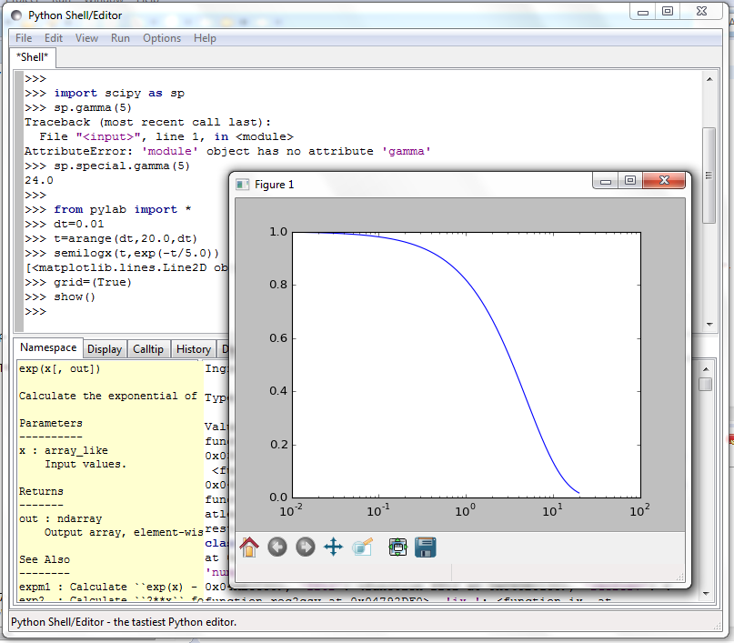

Python Shell Tool
Description
This is a Python shell/editor (PyCrust) provided with WxPython. An editing notebook will show up when a Python file is created/loaded with the New or Open options on the menu.
Run enables the editor to compile and run the Python code.
For the details about the Python, visit the website http://docs.python.org/tutorial/
The NumPy, SciPy, and Matplotlib, etc, libraries are shipped with SasView. However, some functionality may not work.
PyCrust has its own Help.
NOTE! The Help() and Credits() calls do not work on Macs.
Example
An example calling the Matplotlib plotting gallery:
Note
This help document was last changed by Steve King, 19Feb2015